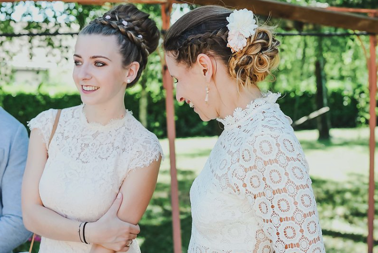

Justine Blache.
Etudiante en management et communication digitale en alternance.
A propos
Attiré par le domaine de la communication et du marketing. Je suis actuellement etudiante en troisième année de Bachelor Management et Communication Digitale à l'ESDES Buisness School.
Afin de rendre mon cursus plus enrichissant, j'ai choisi d'effectuer mon cursus en alternance afin d’enrichir mon expérience terrain.
Apprendre aux cotés de professionnels, me permet d’acquérir les savoirs pratiques nécessaires à l'obtention future de mon diplôme et participera à la construction de mon début de carrière professionnelle.
Formations
2017 – 2018 : 3ème année Bachelor Management et Comminucation Digitale - ESDES Buisness school2016 – 2017 : 2ème année de préparation au BTS Assistant de Gestion PME PMI - Institution Robin - Vienne
2014 – 2015 : Bac STMG-Sciences et Technologies du Management et de la Gestion : Option gestion nances - Mention assez bien institution robin – Vienne
Experiences professionnelle
Assistante communication évenementiel - AM Securite - Alternance
Assistante communication marketing SIP Siege - Stage BTS
Assistante de gestion SIP Siege - Stage BTS
Conseillère vendeuse Conforama - Travail saisonnier
Vendeuse et aide à la fabrication Charcuterie Traiteur Blache - Travail saisonnier
Mes compétences
In Design
Photoshop
Illustrator
Visual studio code
Pack Office
Mac OS
Réseaux sociaux
Langues
Anlgais
Espagnol
2003
2007
2008
2017
Ma réputation
Gérard Gabert. Chef d'entreprise - SIP
Efficace, rigueur ,sens de la compréhension et capacité d'intégration dans une équipe, sont les traits de compétences détectés lors des différents stages effectués dans notre société .
Florence Lirou. Chargée de projets marketing
Rigoureuse et mature. Justine est dotée d'une attention particulière. Son envie d'apprendre, donne plaisir à lui confier des vraies missions.
Anne Justin. Professeur BTS Assistant de Gestion
Justine est une étudiante très serieuse qui a pris coeur à sa formation. On peut compter sur elle. Elle est travailleuse et rigoureuse.
Mes loisirs
Ski alpin
Fitness

Voyages
Equitation
Cuisine
Contact
Vienne, FR
06 58 08 36 79
Email: justine.blache.jb@gmail.com
Je me ferai un plaisir de vous lire! Envoyez-moi un message: